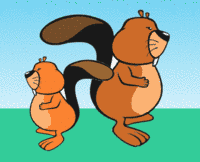

Un petit castor et un grand castor plantent des fleurs dans un jardin. Le petit castor fait des pas plus petits et il plante les fleurs plus près de lui que le grand castor.

Au départ, les deux castors se tiennent dos à dos, regardant donc dans des directions opposées. Ensuite, chacun avance en suivant les instructions suivantes :
Répéter deux fois :
Plante une fleur à ta droite
Fais un pas en avant
Plante une fleur à ta gauche
Fais un pas en avant
Lorsque les deux castors ont terminé, à quoi ressemble le jardin ?
Le petit castor fait des pas plus petits, donc ses empreintes sont celles qui apparaissent sur la moitié gauche de chacune des images. Il faut donc imaginer la situation de départ : le petit castor part du milieu et avance vers la gauche, tandis que le grand castor part du milieu et avance vers la droite.
On peut alors observer de quel côté chaque castor plante sa première fleur :
La bonne réponse correspond à l'image où les deux castors plantent leur première fleur sur leur droite. La réponse est donc A.
Cet exercice présentait un algorithme, écrit en français mais sous une forme similaire aux langages de programmation, donc ce que l'on appelle du pseudo-code. Il incluait une boucle, Répéter deux fois, demandant de répéter 4 instructions concernant la position du castor et l'état du jardin.
Pour le résoudre, il fallait comprendre cet algorithme et l'exécuter à la main, pour déterminer son résultat, sous la forme de la position des fleurs plantées. Il fallait aussi comprendre que l'application de cet algorithme dépendait de paramètres externes comme la taille et l'orientation initiale des castors.